Arcade games in Scratch
Missile Command
Learn It
- Before you were born, there were very few people who had computers in their homes. If you wanted to play a computer game, you did not have a games console to play on, so you played arcade games on special machines that could only play one type of game.
- The games on arcade machines were very simple, but still exciting to play. This is where Pacman, Mario and the Street Fighter games all began.
- The game Missile Command, began on these arcade machines, and in this project you are going to create your own version of it. The idea will be to have Rocks flying towards the Earth, and the player destroying them by firing missiles.
Code It
- Create a new Scratch project.
- The first thing you will need for you game is a new backdrop. You can find the backdrop options in the bottom left of the screen.
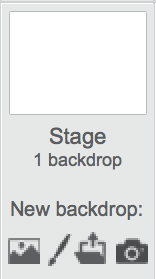
- Choose the Stars backdrop for this project.
- Delete the Cat Sprite and fetch a new sprite for your Base. The Earth Sprite is a good choice. Make sure you call it
Base - Position it, so that it sits at the bottom of the Stage.
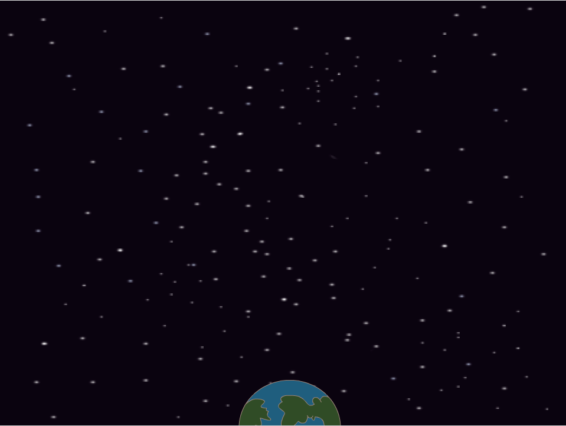
- Now we need some asteroids that are flying towards the Earth. Import the Rocks sprite, and position it at right at the top of the screen, so you can barely see it.
- We can start sending the asteroids flying towards the Earth with a few simple scripts.
- Because we want lots of asteroids, we need to create copies of the Rocks sprite. In Scratch, these copies are called clones. When the game starts, we want to create a new copy of the Rocks sprite every two seconds.
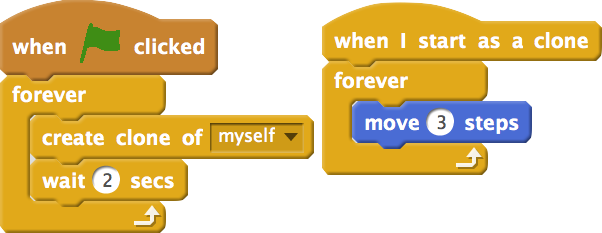
- If you click on the you should see the rocks being created and flying off the Stage.
- Now we need to aim the rocks at the Earth. It would be a little unfair if all the huge rocks were flying towards the Earth, so we shall use a bit of randomness to change their starting position, their size and their direction.
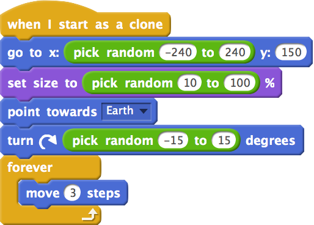
- Now click the green flag to see what happens.
- You'll notice that the original rock is always visible, so we need to hide it.
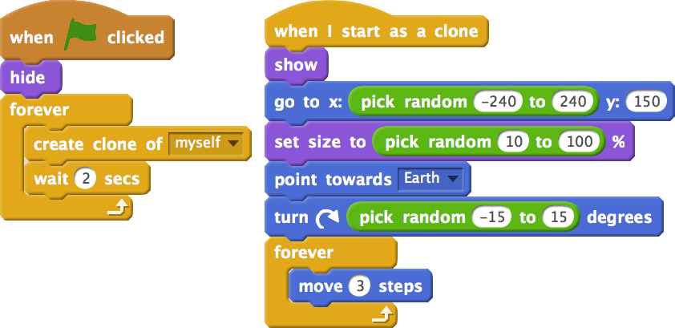
- You might notice that the rocks hang around at the bottom of the screen. We don’t really want this. We can destroy the clones if their y position is less that -180.
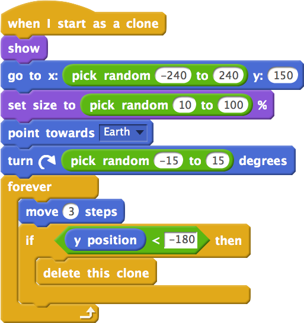
Code It
- Next we need to enable to player to destroy the rocks.
- We're going to need a few more scripts and some variable to accomplish this.
- Firstly create a couple of new variables and call them
xTargetandyTarget - Now add the following script to your Stage
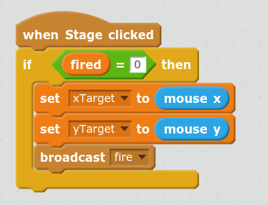
- This sets the variables to the coordinates that the player clicked on, and then broadcasts a message.
Code It
- We need a new sprite to receive the message. This will be a
targetsprite. - Create a new sprite that looks like a pair of cross-hairs.
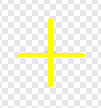
- Also create or import a sprite that looks like a missile. The rocket sprite is quite good. We'll need this for the script.
- Now we need to cause the target sprite to be hidden, but place a clone of itself at the mouse pointer, each time it receives a
firemessage. It will also broadcastexplodeif it gets touched by the missile.
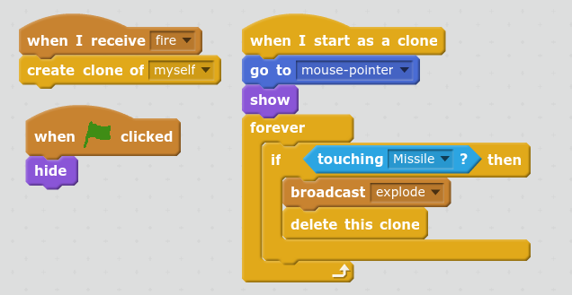
- Click the green flag and make sure that the script is working correctly.
Code It
- Now that a target has been set, we need to fire a missile.
- To make the game trickier, we're only going to allow one missile to be fired at a time. Create a new variable called
firedto store whether a missile has been fired or not. - Now add these scripts to your missile sprite.
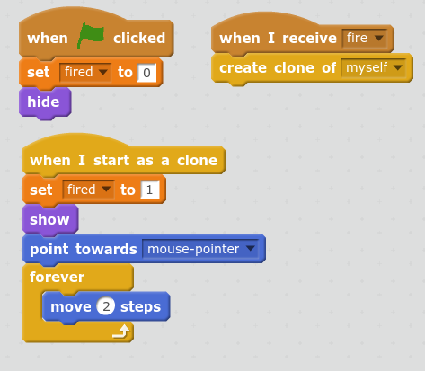
- Test your script again. It should be sending missiles off towards the target when you click the stage.
- We want the missiles to explode when they touch the target though.
Code It
- Let's create an explosion sprite. Make or import something that looks like a ball of fire. Make sure it starts off very small
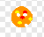
- When the missile touches the target a clone of the explosion will be made. We then want it to grow and shrink.
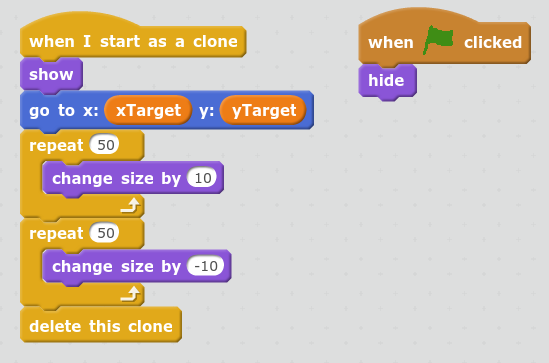
- Now go back to the missile sprite and add in this script.
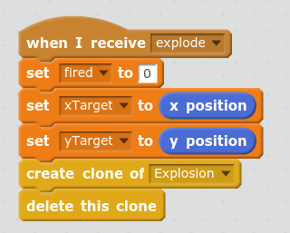
- Click the green flag to make sure it all works.
Code It
- To finish off we need to have the rocks begin destroyed if they touch the explosion. If they touch the base however, the game should end and a message should be displayed.
- Add a new backdrop to your stage. It should say something like
Game Over - Now switch to your
Rocksprite and add in this script.
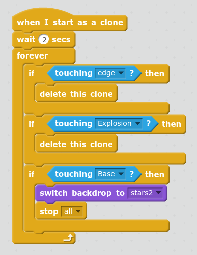
- Test your game to make sure that it works.
Badge It
Silver
- The explosion is a little dull. Use some image effects and motion to make it a little more exciting as it grows and shrinks. You can find lots of options in the
LooksPanel.
Gold
- The game is the same, all the way through. Make it more interesting by adding in a scoring system for each rock destroyed. A simple variable can do this. As the player's score increases, the rocks could get faster and more accurate.
Platinum
- The original game was a little different to the one we've created.
- Instead of being able to see the missile sprite - hide it and use the pen tool to draw it's trail.
- Add in an additional two bases for the player to defend.
- Add in an occasional flying saucer that can drop bombs on the player's bases.
- Allow the player to fire up to three missiles simultaneously.